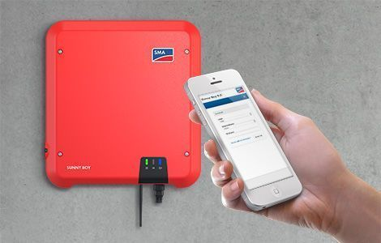

SmartSolar MPPT
A solar charger gathers energy from your solar panels, and stores it in your batteries.
Using the latest, fastest technology, SmartSolar maximises this energy-harvest,
driving it intelligently to achieve full charge in the shortest possible time.
SmartSolar maintains battery health, extending its life.
The SmartSolar charge controller will even recharge a severely depleted battery.
It can operate with a battery voltage as low as 0 Volts,
provided the cells are not permanently sulphated or otherwise damaged.
For more info click
Here

SUNNY BOY
Thanks to its integrated web interface for easy commissioning via a smartphone or
tablet and SMA Smart Connected service, this inverter offers true ease and comfort for PV system operators and installers.
Established product features and integrated software solutions will provide yield
optimization throughout the system’s entire service life.
Even in shading. SMA ShadeFix is a proprietary inverter software that
optimizes energy yield in nearly every situation. SMA Smart Connected inverter
monitoring offers enhanced safety by detecting errors at an early stage and automatically
reporting them to the installer.
For more info click
Here

MultiPlus
The MultiPlus, as the name suggests, is a combined inverter and charger in one elegant package.
Its many features include a true sine wave inverter, adaptive charging, hybrid PowerAssist technology,
plus multiple system integration features.
The MultiPlus will prevent overload of a limited AC source, such as a generator or shore power
connection.
In the event of a grid failure, or when shore or generator power is disconnected, the inverter
within the Multi is automatically activated and takes over the supply to the connected loads.
For more info click
Here